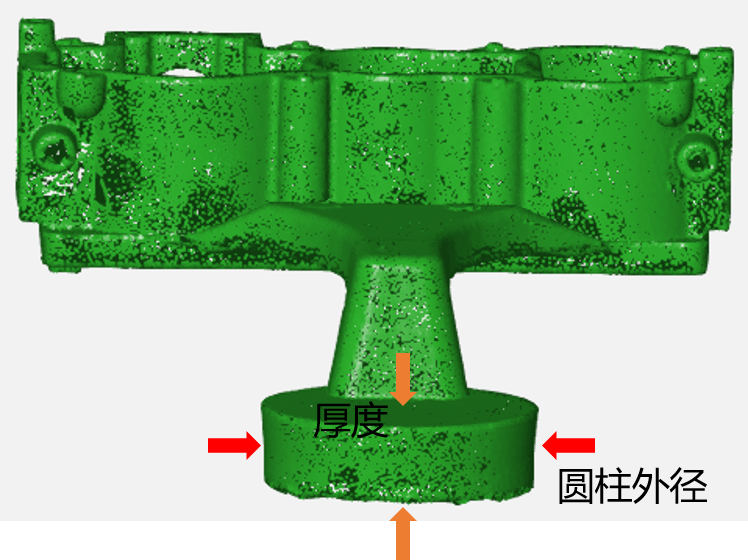
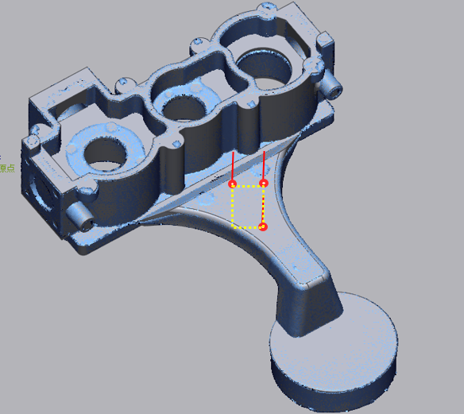
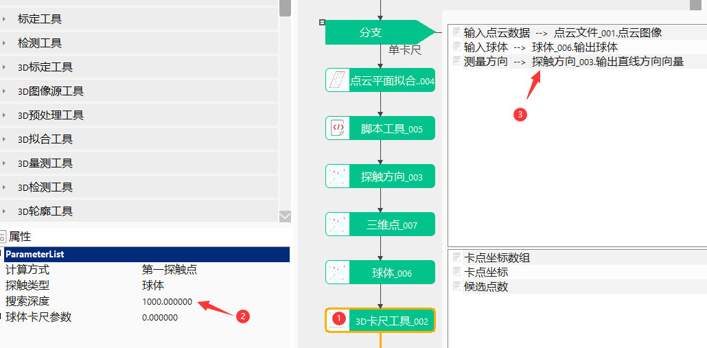
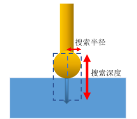
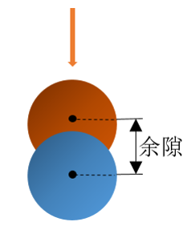
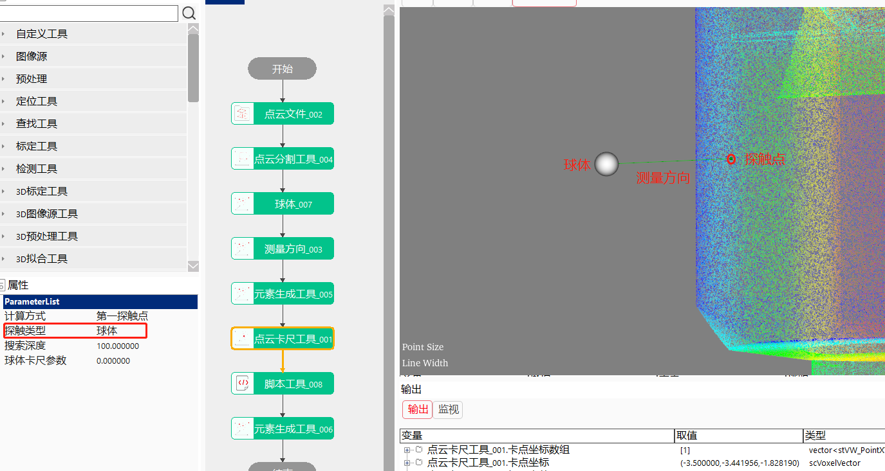
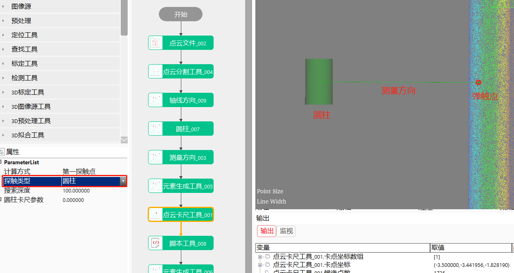
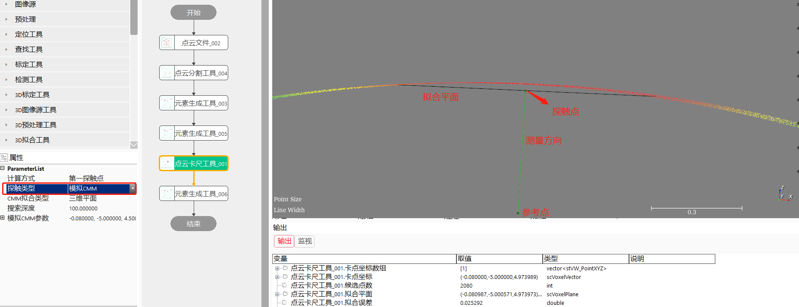
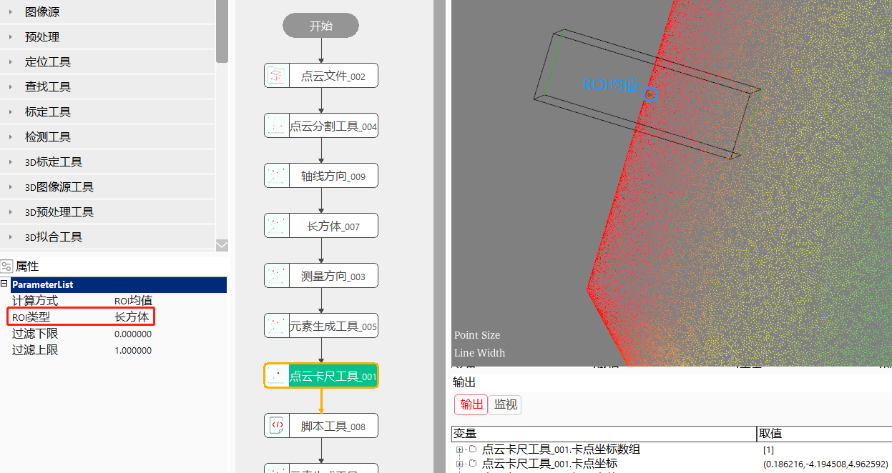

Công cụ điểm mây thước kẹp chủ yếu được ứng dụng trong đo kích thước chi tiết, chẳng hạn như đo độ dày, chiều dài chiều rộng, đường kính ngoài của hình trụ, đường kính trong của lỗ tròn v.v. của chi tiết, hoặc mô phỏng máy đo tọa độ ba chiều để thăm dò và lấy điểm trên bề mặt vật thể;


Mô phỏng cảnh đo dữ liệu bằng đầu dò trong thực tế để đo dữ liệu điểm mây;
Thêm “Điểm mây thước kẹp công cụ”, thiết lập tham số thuộc tính, liên kết dữ liệu, như hình 3-1 hiển thị;

| Tên tham số | Mô tả tham số |
|---|---|
| Dữ liệu điểm mây đầu vào | Liên kết dữ liệu điểm mây hình ảnh cần thực hiện đo |
| Hướng đo | Hướng thăm dò của công cụ điểm mây thước kẹp đầu vào, đầu dò sẽ dọc theo hướng đo để thăm dò hoặc đo dữ liệu điểm mây |
| Đầu vào hình cầu/hình trụ/hình hộp chữ nhật | Hình dạng của đầu dò ở chế độ điểm thăm dò đầu tiên hoặc hình dạng ROI ở chế độ ROI, có thể liên kết đầu ra của các công cụ khác (công cụ tạo phần tử: hình cầu, hình trụ, hình hộp chữ nhật) |
| Điểm tham chiếu | Chỉ có hiệu lực khi phương pháp tính toán điểm thước kẹp là giá trị trung bình chiếu/giá trị trung bình chiếu ROI, điểm tham chiếu và vector hướng tạo thành đường thẳng, dùng để chiếu điểm mây |
| Tên tham số | Mô tả tham số |
|---|---|
| Phương thức tính toán | Điểm thăm dò đầu tiên: hình cầu, hình trụ đầu vào v.v. được dùng làm thể thăm dò, giá trị trung bình/giá trị trung vị/giá trị lớn nhất/giá trị nhỏ nhất/giá trị trung bình chiếu nhắm đến toàn bộ điểm mây, giá trị trung bình ROI/giá trị trung vị ROI/giá trị lớn nhất ROI/giá trị nhỏ nhất ROI/giá trị trung bình chiếu ROI nhắm đến điểm mây bên trong ROI |
| Loại thước kẹp | Chọn loại thước kẹp đo (đầu dò), bao gồm: ba loại hình cầu, hình trụ, mô phỏng CMM |
| Loại ROI | Loại ROI bao gồm ba loại: hình cầu, hình trụ, hình hộp chữ nhật. Chỉ có hiệu lực khi phương thức tính toán tồn tại chế độ ROI |
| Giới hạn dưới lọc ~ Giới hạn trên lọc | Thiết lập tỷ lệ bắt đầu và kết thúc dữ liệu sử dụng khi tính toán điểm thước kẹp (có hiệu lực ngoài chế độ điểm thăm dò đầu tiên) |
| Loại khớp CMM | Mô phỏng đo tiếp xúc thực tế của hình học phức tạp. Bao gồm: mặt phẳng ba chiều, hình cầu, hình trụ, hình nón |
| Độ sâu tìm kiếm | Độ sâu tìm kiếm là độ sâu vùng tìm kiếm được định nghĩa dọc theo hướng thăm dò từ vị trí ban đầu của thước kẹp (có hiệu lực ở chế độ điểm thăm dò đầu tiên), phạm vi [0，1000000], như hình 7-1 hiển thị |
| Tham số thước kẹp hình cầu | Khe hở thước kẹp：Khi loại thước kẹp là thước kẹp hình cầu hoặc thước kẹp hình trụ, khe hở là khoảng cách mà vị trí ban đầu của hình cầu hoặc hình trụ di chuyển dọc theo hướng thăm dò. Màu xanh lam là vị trí ban đầu của thước kẹp hình cầu, màu cam là vị trí sau khi thước kẹp hình cầu di chuyển dọc theo hướng thăm dò, tức khoảng cách giữa hai tâm cầu; như hình 7-1 hiển thị |
Tham số giao diện nâng cao giống với tham số cửa sổ thuộc tính.
| Tên tham số | Mô tả tham số |
|---|---|
| Mảng tọa độ điểm kẹp | Mảng tọa độ ba chiều của điểm thăm dò thu được bằng công cụ thước kẹp |
| Tọa độ điểm kẹp | Nhóm tọa độ ba chiều đầu tiên của điểm thăm dò thu được bằng công cụ thước kẹp |
| Số điểm ứng viên | Chỉ số điểm ba chiều thu được khi điểm thăm dò tiếp xúc |
| Mặt phẳng/hình trụ/hình cầu/hình nón đã khớp | Các loại khác nhau của CMM, đầu ra mặt phẳng/hình trụ/hình cầu/hình nón tương ứng |
| Lỗi khớp | Lỗi khớp mặt phẳng, chỉ kết quả RMS của tất cả các điểm tham gia khớp mặt phẳng |
| Tên tham số | Mô tả tham số |
|---|---|
| Mảng tọa độ điểm kẹp | Mảng tọa độ ba chiều của điểm thăm dò thu được bằng công cụ thước kẹp |
| Tọa độ điểm kẹp | Nhóm tọa độ ba chiều đầu tiên của điểm thăm dò thu được bằng công cụ thước kẹp |
| Số điểm ứng viên | Chỉ số điểm ba chiều thu được khi điểm thăm dò tiếp xúc |
| Mặt phẳng/hình trụ/hình cầu/hình nón đã khớp | Các loại khác nhau của CMM, đầu ra mặt phẳng/hình trụ/hình cầu/hình nón tương ứng |
| Lỗi khớp | Lỗi khớp mặt phẳng, chỉ kết quả RMS của tất cả các điểm tham gia khớp mặt phẳng |
| Kết quả thực thi | Kết quả thực thi của công cụ |
| Thời gian thực thi | Thời gian thực thi của công cụ |
Tham khảo “\Samples\Điểm mây thước kẹp công cụ.gvp”。
1、Điểm thăm dò đầu tiên：Từ vị trí hiện tại dọc theo hướng đo tiếp xúc với điểm mây, tính toán vị trí điểm thăm dò đầu tiên;
Loại thăm dò：Hiện tại hỗ trợ: hình cầu, hình trụ và mô phỏng CMM;
Hướng đo：Tức là hướng đo của thước kẹp, thước kẹp dọc theo hướng này tiếp xúc với dữ liệu điểm mây để lấy điểm;
Độ sâu tìm kiếm：Độ sâu tìm kiếm là độ sâu vùng tìm kiếm được định nghĩa dọc theo hướng thăm dò từ vị trí ban đầu của thước kẹp, như hình 7-1 hiển thị;
Bán kính tìm kiếm：Khi loại thăm dò là điểm mô phỏng CMM, bán kính tìm kiếm là bán kính vùng tìm kiếm được định nghĩa dọc theo hướng thăm dò từ điểm tham chiếu của thước kẹp, như hình 7-1 hiển thị;
Khe hở：Khi loại thăm dò là thước kẹp hình cầu hoặc thước kẹp hình trụ, khe hở là khoảng cách mà vị trí ban đầu của hình cầu hoặc hình trụ di chuyển dọc theo hướng đo, như hình 7-1 hiển thị. Màu xanh lam là vị trí ban đầu của thước kẹp hình cầu, màu cam là vị trí sau khi thước kẹp hình cầu di chuyển dọc theo hướng thăm dò, tức khoảng cách giữa hai tâm cầu, các tính toán tiếp theo sẽ thực hiện theo vị trí hình cầu màu cam, tức là đạt được hiệu quả tính toán di chuyển vị trí ROI mà không thực sự di chuyển vị trí ROI;


Thước kẹp hình cầu/hình trụ：Dựa trên vị trí hình cầu/hình trụ được xây dựng, dọc theo hướng đo tiếp xúc với điểm mây, xuất ra điểm tiếp xúc đầu tiên;


Chú ý: Thước kẹp hình trụ là mặt bên của hình trụ tiếp xúc với điểm mây để lấy điểm;
Điểm mô phỏng CMM：Dựa trên bán kính và độ sâu xác định một phạm vi tìm kiếm, khớp các điểm trong phạm vi này thành mặt phẳng/hình cầu/hình trụ/mặt nón tương ứng, xuất ra điểm giao giữa tia được tạo bởi điểm tham chiếu dọc theo hướng tìm kiếm với mặt đã khớp;

2、Giá trị trung bình/giá trị trung vị/giá trị lớn nhất/giá trị nhỏ nhất/giá trị trung bình chiếu：Nhắm đến toàn bộ điểm mây, tính toán giá trị trung bình/giá trị trung vị/giá trị lớn nhất/giá trị nhỏ nhất/giá trị trung bình chiếu;
Giới hạn trên dưới lọc：Chiếu điểm mây đầu vào lên hướng đo, sau đó lọc điểm mây theo giới hạn trên dưới rồi tính toán;
Điểm tham chiếu：Có hiệu lực khi là giá trị trung bình chiếu, sau khi tính toán được giá trị trung bình thì chiếu lên đường thẳng được tạo bởi điểm tham chiếu + vector hướng;
3、Giá trị trung bình ROI/giá trị trung vị ROI/giá trị lớn nhất ROI/giá trị nhỏ nhất ROI/giá trị trung bình chiếu ROI：Nhắm đến điểm mây bên trong ROI, tính toán giá trị trung bình/giá trị trung vị/giá trị lớn nhất/giá trị nhỏ nhất/giá trị trung bình chiếu bên trong ROI;
Loại ROI：Hiện tại hỗ trợ: hình cầu, hình trụ và hình hộp chữ nhật;
